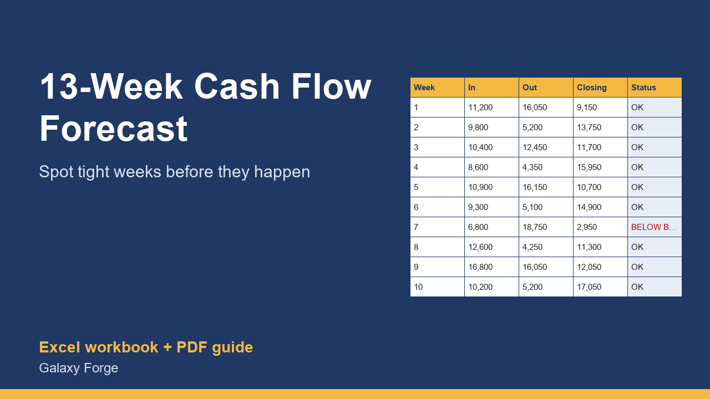

See every week's cash position for the next quarter, spot the tight weeks before they happen, and track forecast against actual.
The 13-week cash flow forecast is the tool lenders, turnaround advisors and finance teams use when cash matters: one row per week for the next quarter, money in, money out, and the bank balance at the end of each week.
Monthly profit-and-loss reports hide timing. A month can be profitable on paper while payroll lands two days before the biggest customer pays. A weekly view shows that gap in advance, while there is still time to move a payment, chase an invoice or arrange a credit line.
This workbook gives you that view in Excel with no setup: enter your opening balance and your expected receipts and payments, and it calculates the weekly net, the running balance, flags every week that falls below the minimum cash buffer you choose, and summarises the quarter.
1) On Inputs, enter today's bank balance, the minimum balance you never want to go below, and the Monday your forecast starts. 2) On Forecast, replace the example amounts week by week: expected customer receipts and other receipts in the first two input columns, then your payments by category. Leave a cell empty if nothing is expected. 3) Read the Closing balance and Status columns: any BELOW BUFFER week needs an action now. 4) Each week, roll forward: move the start date on by a week and update the figures. 5) Optionally enter your real end-of-week bank balance on Variance to see how accurate your forecasting is becoming.
Price: $19, one-time. Download: 13_week_cash_flow_forecast.xlsx (Inputs, Forecast, Summary, Variance) and this guide. Works in Excel 2016 or later, Excel for Mac and Excel on the web; opens in Google Sheets and LibreOffice.
New product, listed 2026-10-23: no sales or reviews yet. Example figures in the workbook are illustrative.
This workbook is a planning tool, not accounting, tax or financial advice. Its results are only as accurate as the figures you enter; check important decisions with a qualified accountant.